This view displays a map together with other types of geographical information. This information is organized in a stack of overlays shown on top of each other. Each overlay can individually be set active or inactive in the map configuration dialog. This dialog can be reached from the map view context menu.
The map view has three modes (use Tab to shift):
See also the map section in keyboard shortcuts.
Items in the map context menu:
The toolbar button can be used to toggle on and off the map tooltip. The tooltip displays latitude and longitude corresponding to the mouse location.
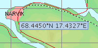
The map view is organized as a stack of several overlays. Each overlay can be turned on or off in the configuration dialog for the map.
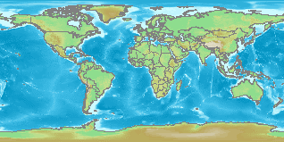
This overlay displays the background map. The map image is provided by a WMS server. The URL of the WMS application can be configured in [Application configuration - Miscellaneous].
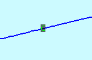
This overlay displays the letter "C" at the location of a comment. Comments are also displayed on the echogram and in the comment module. Comments may be added using the context menu of the echogram.
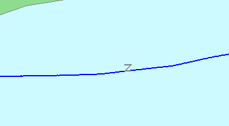
This overlay displays a Z corresponding to where CTD data exists.
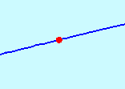
This overlay displays a red dot corresponding to the mouse position in the echogram.
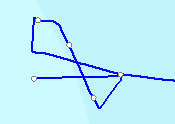
This overlay draws a small box at the beginning of each data file. This corresponds to the file markers on the echogram.
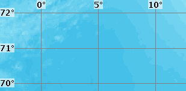
This overlay displays a geographical grid of latitude and longitude lines.
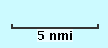
This overlay displays a length scale in the lower right corner of the map.
This overlay is active near the edges of the map. Here the mouse cursor will change to indicate the panning direction: east, west, north, south. If the left mouse button is clicked, the view area is shifted in the indicated direction.
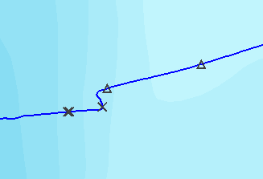
This overlay displays information from the reference log data files.
The following symbols are used:
CTD stations in the ref log data are not shown by this overlay, but are shown by the CTD overlay.
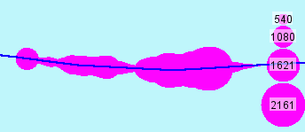
This overlay displays sA in the map as circles of different sizes depending on the sA value. The circles in the bottom right corner shows what sA value corresponds to which circle size. The sA can also be shown in the echogram.
This overlay can optionally show sA for only one acoustic category. In that case, the sA is multiplied by the category assignment for each region.
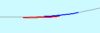
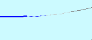
This overlay shows the vessel line. This line is thick blue for the distance shown in the echogram view, and thin gray elsewhere. Segments that are excluded are drawn using a thin dotted line. In addition, the parts where interpretation is stored to the database a red line is shown.
Click on the line to center the echogram around that point.